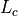
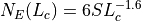
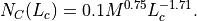
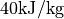
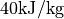

WsfNASA_BreakupModel¶
-
WsfNASA_BreakupModel inherits ObjectConstruction:
WsfNASA_BreakupModel newObj = WsfNASA_BreakupModel();
WsfNASA_BreakupModel implements a satellite breakup model based on the NASA Standard Breakup Model (see Model Overview). Methods on this object will replace the progenitor for an explosive breakup, or the progenitors for a collisional breakup, with a number of other platforms representing the debris produced by the breakup event. This model has a number of parameters that can be controlled by the user, so the typical use-case involves creating an instance of this class, setting the model parameters, and then calling one of the two debris generation methods (WsfNASA_BreakupModel.ModelExplosion and WsfNASA_BreakupModel.ModelCollision).
Methods¶
- bool ModelExplosion(string aPlatformName, double aMass, double aLength)¶
Generate debris as from an explosive breakup using the platform with the given name as the progenitor. This method also requires the mass of the platform to use when performing debris generation and the characteristic length scale of the progenitor. This will return true if the debris was successfully generated, and false otherwise.
- bool ModelCollision(string aTargetName, double aTargetMass, double aTargetLength, string aImpactorName, double aImpactorMass, double aImpactorLength)¶
Generate debris as from a collision between the platforms with the given names. This method requires the mass and characteristic length scale to use for modeling the collision for each object. If the two platforms are not close to one another at the time this method is invoked, no debris will be generated and this method will return false. For the purposes of this method, ‘close’ is defined to mean the separation of the two platforms is less than 5 times the sum of their provided lengths. In case of other problems, this method will also return false and no debris will be generated. Otherwise, this method returns true.
- bool HasGeneratedDebris()¶
Return true if debris has been generated. An instance of this model cannot be used to generate debris more than once.
- int GetFragmentCount()¶
Return the number of produced fragments. This will be 0 before one of the debris generation methods has been called.
- WsfSatelliteBreakupFragment GetFragment(int aIndex)¶
Return the produced fragment at the given index. If the given index is out of range, then an invalid fragment will be returned. This method will only return valid fragments after a debris generation method has been called.
- void SetFragmentPlatformType(string aPlatformType)¶
Set the type of platform that will be used for the generated debris platforms. If the user does not explicitly set a platform type, then the generated debris will be WSF_PLATFORM instances with a WSF_SPACE_MOVER with the first-order oblate Earth perturbation enabled.
- string GetDebrisName()¶
Return the template name for the debris produced by this model. Debris platforms generated by this model will have a name that is the template name with a unique numerical identifier appended. For example, if the template name is ‘debris’, then the generated debris will have names ‘debris1’, ‘debris2’, ‘debris3’ and so on.
- void SetDebrisName(string aDebrisName)¶
Set the template name for the debris produced by this model. If the debris name is not set explicitly, then a name formed from the progenitors will be used.
- double GetLargeFragmentFraction()¶
Get the fraction of the mass in a catastrophic collision or an explosive breakup that is deposited as large fragments.
- void SetLargeFragmentFraction(double aFraction)¶
Set the fraction of the mass for catastrophic collisions and explosive breakups that is deposited as larger mass fragments. The default value for this parameter is 0.5. This parameter must be in the range [0, 1], and this method will restrict input to this range.
More debris fragments will be produced when this value is small, and fewer debris fragments will be produced as this value approaches 1.0.
- bool IsModeledAsSpacecraft()¶
Return if the debris is modeled as if it came from a spacecraft as opposed to a rocket body.
- void SetModeledAsSpacecraft(bool aIsSpacecraft)¶
Set whether the debris is modeled as if it were from a breakup of a spacecraft as opposed to a rocket body. The default operation of this method is for the progenitors to be modeled as spacecraft.
The primary effect of this choice is to change the details of the Area/Mass distribution of the produced debris fragments. There are secondary effects of this choice, including different distributions of the masses of the fragments, which is computed from the ratio of area to mass.
- double GetMinFragmentSize()¶
Get the minimum size in meters of fragments produced by this model.
- void SetMinFragmentSize(double aMinSize)¶
Set the minimum size in meters of fragments produced by this model. The default value for this parameter is 0.1 meters.
This quantity controls the number of debris fragments generated by this model. The number of fragments follows a power law (see Model Overview), so even modest decreases in the minimum fragment size can lead to significant increases in the number of fragments produced.
- double GetExplosionS_Factor()¶
Return the
 value used for an explosive breakup.
value used for an explosive breakup.
- void SetExplosionS_Factor(double aS_Factor)¶
Set the
value used for an explosive breakup. The default value of this
parameter if 1.0.This is a coefficient in the power law describing the number of fragments produced for an explosive breakup (see Model Overview). As this value is increased, the number of fragments will increase in proportion.
- string GetExplosionProgenitor()¶
Return the name of the platform that was the progenitor of the explosive breakup.
- double GetExplosionMass()¶
Return the mass in kilograms of the debris produced by the explosion.
- double GetCollisionProgenitorOneMass()¶
Return the mass in kilograms of the first collision progenitor.
- double GetCollisionProgenitorTwoMass()¶
Return the mass in kilograms of the second collision progenitor.
- double GetCollisionMass()¶
Return the mass in kilograms of the collision progenitors that were involved in producing debris.
Model Overview¶
This implementation is based on the following two sources:
NASA’s New Breakup Model of Evolve 4.0, N. L. Johnson, P. H. Krisko, J.-C. Liou, and P. D. Anz-Meador, Adv. Space Res. Vol 28, 9, pp. 1377-1384 (2001).
Proper Implementation of the 1998 NASA Breakup Model, P. Krisko, Orbital Debris Quarterly News, 15, 4, October 2011.
The NASA Standard breakup model can be used to produce debris characteristics for both explosive and collisional breakup events. The model produces the following properties for each debris fragment: a length scale for the piece of debris, the ratio of the area to the mass of the fragment, the area, the mass and the increment in velocity of the fragment relative to its progenitor.
For both explosive and collisional breakup events, the primary characteristic of the debris is taken to be the length scale of the fragment. The number of fragments of a given size is predicted by the model, and the remaining parameters all depend on this length scale for their generation. The number of fragments with a given size, , or larger for an explosive breakup is:

where is a unitless number. For collisions, the
number of fragments with a given size or larger is

The mass,  , appearing above gives the amount of mass involved in the
generation of debris. If the ratio of the relative kinetic energy of the
smaller mass progenitor to the mass of the larger progenitor is greater than
 then the collision is catastrophic,
and the full mass of both progenitors is involved in generating debris.
Otherwise, the collision is non-catastrophic, and the mass involved in debris
generation scales with the mass of the impactor (taken to be the smaller mass
progenitor) and the square of the relative speed of the collision.
, appearing above gives the amount of mass involved in the
generation of debris. If the ratio of the relative kinetic energy of the
smaller mass progenitor to the mass of the larger progenitor is greater than
 then the collision is catastrophic,
and the full mass of both progenitors is involved in generating debris.
Otherwise, the collision is non-catastrophic, and the mass involved in debris
generation scales with the mass of the impactor (taken to be the smaller mass
progenitor) and the square of the relative speed of the collision.
This implementation of the NASA model employs a user-provided minimum length scale to the fragments generated to help bound the number of debris fragments produced. This implementation produces delta-V values for collisions that differ from the expression in (1), which can predict unrealistic velocities in some instances.